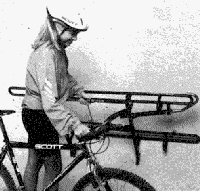
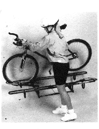
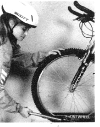

All UMass Transit routes are equipped with bike racks year-round. Each rack, located at the front of the bus, holds two bikes. The racks are safe and easy to use; just follow the instructions below (they're also posted on the buses right above the racks).
Note: Recumbents, tandems, tricycles, and bicycles with wheels less than 16-inches in diameter are not compatible with the racks. Also, along with any other large object that could become a projectile in the event of a sudden stop, Bicycles are NEVER allowed inside the bus.
WARNING: For your safety, it is imperative that you maintain eye contact with the driver at all times during the entire loading and unloading process. NEVER unload your bicycle from the traffic side of the bus. Passengers are responsible for loading/unloading their own bikes.
Loading your Bike:
Be sure all loose objects are removed before you begin. Wait until the bus has come to a complete stop before moving forward, then tell the driver you will be putting your bike in the rack.
Step 1

Pull down the rack mounted on the front of the bus by squeezing the release handle and lowering the rack.
Step 2

Load your bike, using the slots farthest from the bus first, making certain that each wheel is in the proper slot. Wheel slots are clearly labeled for front and rear tires.
Step 3

To secure your bicycle in the rack, raise the support arm as far as it will go, so that it rests on the top of the front tire. Once the bicycle is secured it's your turn to board the bus.
Unloading your Bike:
As you approach your stop, advise the driver that you will be unloading your bike. Unload your bicycle from the front of the bus or the curb - never from the traffic side of the bus. Simply reverse the above steps, and don't forget to fold up the rack if the rack is empty.